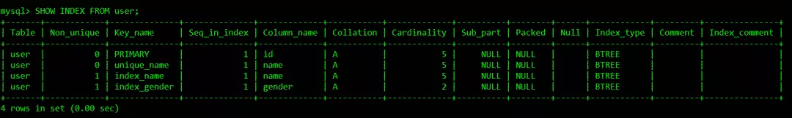
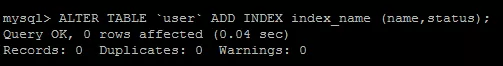
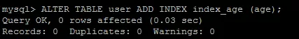

原文连接:https://www.cnblogs.com/java-chen-hao/p/10477128.html
本文主要讨论MySQL索引的部分知识。将会从MySQL索引基础、索引优化实战和数据库索引背后的数据结构三部分相关内容，下面一一展开。
一、MySQL——索引基础
首先，我们将从索引基础开始介绍一下什么是索引，分析索引的几种类型，并探讨一下如何创建索引以及索引设计的基本原则。
此部分用于测试索引创建的user表的结构如下：
1、什么是索引
“索引（在MySQL中也叫“键key”）是存储引擎快速找到记录的一种数据结构。”
——《高性能MySQL》
我们需要知道索引其实是一种数据结构，其功能是帮助我们快速匹配查找到需要的数据行，是数据库性能优化最常用的工具之一。其作用相当于超市里的导购员、书本里的目录。
2、索引类型
可以使用SHOW INDEX FROM table_name;查看索引详情：

主键索引 PRIMARY KEY
它是一种特殊的唯一索引，不允许有空值。一般是在建表的时候同时创建主键索引。注意：一个表只能有一个主键。
唯一索引 UNIQUE
唯一索引列的值必须唯一，但允许有空值。如果是组合索引，则列值的组合必须唯一。
可以通过ALTER TABLE table_name ADD UNIQUE (column);创建唯一索引：
可以通过ALTER TABLE table_name ADD UNIQUE (column1,column2);创建唯一组合索引：
普通索引 INDEX
这是最基本的索引，它没有任何限制。
可以通过ALTER TABLE table_name ADD INDEX index_name (column);创建普通索引：
组合索引 INDEX
即一个索引包含多个列，多用于避免回表查询。
可以通过ALTER TABLE table_name ADD INDEX index_name(column1,column2, column3);创建组合索引：
全文索引 FULLTEXT
也称全文检索，是目前搜索引擎使用的一种关键技术。
可以通过ALTER TABLE table_name ADD FULLTEXT (column);创建全文索引：
索引一经创建不能修改，如果要修改索引，只能删除重建。可以使用DROP INDEX index_name ON table_name;删除索引。
3、索引设计的原则
-
适合索引的列是出现在where子句中的列，或者连接子句中指定的列；
-
基数较小的类，索引效果较差，没有必要在此列建立索引；
-
使用短索引，如果对长字符串列进行索引，应该指定一个前缀长度，这样能够节省大量索引空间；
-
不要过度索引。索引需要额外的磁盘空间，并降低写操作的性能。在修改表内容的时候，索引会进行更新甚至重构，索引列越多，这个时间就会越长。所以只保持需要的索引有利于查询即可。
二、MySQL——索引优化实战
上面我们介绍了索引的基本内容，这部分我们介绍索引优化实战。在介绍索引优化实战之前，首先要介绍两个与索引相关的重要概念，这两个概念对于索引优化至关重要。
此部分用于测试的user表结构：
1、索引相关的重要概念
基数
单个列唯一键（distict_keys）的数量叫做基数。
SELECT COUNT(DISTINCT name),COUNT(DISTINCT gender) FROM user;
user表的总行数是5，gender列的基数是2，说明gender列里面有大量重复值，name列的基数等于总行数，说明name列没有重复值，相当于主键。
返回数据的比例：
user表中共有5条数据：
SELECT * FROM user;
查询满足性别为0（男）的记录数：
那么返回记录的比例数是：
同理，查询name为'swj'的记录数：
返回记录的比例数是：
现在问题来了，假设name、gender列都有索引，那么SELECT * FROM user WHERE gender = 0; SELECT * FROM user WHERE name = 'swj';都能命中索引吗？
user表的索引详情：
SELECT * FROM user WHERE gender = 0;没有命中索引，注意filtered的值就是上面我们计算的返回记录的比例数。
SELECT * FROM user WHERE name = 'swj';命中了索引index_name，因为走索引直接就能找到要查询的记录，所以filtered的值为100。
因此，返回表中30%内的数据会走索引，返回超过30%数据就使用全表扫描。当然这个结论太绝对了，也并不是绝对的30%，只是一个大概的范围。
回表
当对一个列创建索引之后，索引会包含该列的键值及键值对应行所在的rowid。通过索引中记录的rowid访问表中的数据就叫回表。回表次数太多会严重影响SQL性能，如果回表次数太多，就不应该走索引扫描，应该直接走全表扫描。
EXPLAIN命令结果中的Using Index意味着不会回表，通过索引就可以获得主要的数据。Using Where则意味着需要回表取数据。
2、索引优化实战
有些时候虽然数据库有索引，但是并不被优化器选择使用。
我们可以通过SHOW STATUS LIKE 'Handler_read%';查看索引的使用情况：
-
Handler_read_key：如果索引正在工作，Handler_read_key的值将很高。
-
Handler_read_rnd_next：数据文件中读取下一行的请求数，如果正在进行大量的表扫描，值将较高，则说明索引利用不理想。
索引优化规则：
-
如果MySQL估计使用索引比全表扫描还慢，则不会使用索引。
返回数据的比例是重要的指标，比例越低越容易命中索引。记住这个范围值——30%，后面所讲的内容都是建立在返回数据的比例在30%以内的基础上。
-
前导模糊查询不能命中索引。
name列创建普通索引：
前导模糊查询不能命中索引：
EXPLAIN SELECT * FROM user WHERE name LIKE '%s%';
非前导模糊查询则可以使用索引，可优化为使用非前导模糊查询：
EXPLAIN SELECT * FROM user WHERE name LIKE 's%';
-
数据类型出现隐式转换的时候不会命中索引，特别是当列类型是字符串，一定要将字符常量值用引号引起来。
EXPLAIN SELECT * FROM user WHERE name=1;
EXPLAIN SELECT * FROM user WHERE name='1';
-
复合索引的情况下，查询条件不包含索引列最左边部分（不满足最左原则），不会命中符合索引。
name,age,status列创建复合索引：
ALTER TABLE user ADD INDEX index_name (name,age,status);

user表索引详情：
SHOW INDEX FROM user;
根据最左原则，可以命中复合索引index_name：
EXPLAIN SELECT * FROM user WHERE name='swj' AND status=1;
注意，最左原则并不是说是查询条件的顺序：
EXPLAIN SELECT * FROM user WHERE status=1 AND name='swj';
而是查询条件中是否包含索引最左列字段：
EXPLAIN SELECT * FROM user WHERE status=2 ;
-
union、in、or都能够命中索引，建议使用in。
union:
EXPLAIN SELECT*FROM user WHERE status=1
UNION ALL
SELECT*FROM user WHERE status = 2;
in:
EXPLAIN SELECT * FROM user WHERE status IN (1,2);
or:
EXPLAIN SELECT*FROM user WHERE status=1OR status=2;
查询的CPU消耗：or>in>union
-
用or分割开的条件，如果or前的条件中列有索引，而后面的列中没有索引，那么涉及到的索引都不会被用到。
EXPLAIN SELECT * FROM payment WHERE customer_id = 203 OR amount = 3.96;
因为or后面的条件列中没有索引，那么后面的查询肯定要走全表扫描，在存在全表扫描的情况下，就没有必要多一次索引扫描增加IO访问。
-
负向条件查询不能使用索引，可以优化为in查询。
负向条件有：!=、<>、not in、not exists、not like等。
status列创建索引：
ALTER TABLE user ADD INDEX index_status (status);

user表索引详情：
SHOW INDEX FROM user;
负向条件不能命中缓存：
EXPLAIN SELECT * FROM user WHERE status !=1 AND status != 2;
可以优化为in查询，但是前提是区分度要高，返回数据的比例在30%以内：
EXPLAIN SELECT * FROM user WHERE status IN (0,3,4);
-
范围条件查询可以命中索引。范围条件有：<、<=、>、>=、between等。
status,age列分别创建索引：
ALTER TABLE user ADD INDEX index_status (status);
ALTER TABLE user ADD INDEX index_age (age);

user表索引详情：
SHOW INDEX FROM user;

范围条件查询可以命中索引：
EXPLAIN SELECT * FROM user WHERE status>5;
范围列可以用到索引（联合索引必须是最左前缀），但是范围列后面的列无法用到索引，索引最多用于一个范围列，如果查询条件中有两个范围列则无法全用到索引：
EXPLAIN SELECT * FROM user WHERE status>5 AND age<24;
如果是范围查询和等值查询同时存在，优先匹配等值查询列的索引：
EXPLAIN SELECT * FROM user WHERE status>5 AND age=24;
-
数据库执行计算不会命中索引。
EXPLAIN SELECT * FROM user WHERE age>24;
EXPLAIN SELECT * FROM user WHERE age+1>24;
计算逻辑应该尽量放到业务层处理，节省数据库的CPU的同时最大限度的命中索引。
-
利用覆盖索引进行查询，避免回表。
被查询的列，数据能从索引中取得，而不用通过行定位符row-locator再到row上获取，即“被查询列要被所建的索引覆盖”，这能够加速查询速度。
user表的索引详情：
因为status字段是索引列，所以直接从索引中就可以获取值，不必回表查询：
Using Index代表从索引中查询：
EXPLAIN SELECT status FROM user where status=1;
当查询其他列时，就需要回表查询，这也是为什么要避免SELECT*的原因之一：
EXPLAIN SELECT * FROM user where status=1;
-
建立索引的列，不允许为null。
单列索引不存null值，复合索引不存全为null的值，如果列允许为null，可能会得到“不符合预期”的结果集，所以，请使用not null约束以及默认值。
remark列建立索引：
ALTER TABLE user ADD INDEX index_remark (remark);
IS NULL可以命中索引：
EXPLAIN SELECT * FROM user WHERE remark IS NULL;
IS NOT NULL不能命中索引：
EXPLAIN SELECT * FROM user WHERE remark IS NOT NULL;
虽然IS NULL可以命中索引，但是NULL本身就不是一种好的数据库设计，应该使用NOT NULL约束以及默认值。
-
更新十分频繁的字段上不宜建立索引：因为更新操作会变更B+树，重建索引。这个过程是十分消耗数据库性能的。
-
区分度不大的字段上不宜建立索引：类似于性别这种区分度不大的字段，建立索引的意义不大。因为不能有效过滤数据，性能和全表扫描相当。另外返回数据的比例在30%以外的情况下，优化器不会选择使用索引。
-
业务上具有唯一特性的字段，即使是多个字段的组合，也必须建成唯一索引。虽然唯一索引会影响insert速度，但是对于查询的速度提升是非常明显的。另外，即使在应用层做了非常完善的校验控制，只要没有唯一索引，在并发的情况下，依然有脏数据产生。
-
多表关联时，要保证关联字段上一定有索引。
-
创建索引时避免以下错误观念：索引越多越好，认为一个查询就需要建一个索引；宁缺勿滥，认为索引会消耗空间、严重拖慢更新和新增速度；抵制唯一索引，认为业务的唯一性一律需要在应用层通过“先查后插”方式解决；过早优化，在不了解系统的情况下就开始优化。
3、小结
对于自己编写的SQL查询语句，要尽量使用EXPLAIN命令分析一下，做一个对SQL性能有追求的程序员。衡量一个程序员是否靠谱，SQL能力是一个重要的指标。作为后端程序员，深以为然。
三、数据库索引背后的数据结构
第一部分开头我们简单提到，索引是存储引擎快速找到记录的一种数据结构。进一步说，在数据库系统里，这种数据结构要满足特定查找算法，即这些数据结构以某种方式引用（指向）数据，这样就可以在这些数据结构上实现高级查找算法。
1、B-Tree
B-Tree是一种平衡的多路查找(又称排序)树，在文件系统中和数据库系统中有所应用，主要用作文件的索引。其中的B就表示平衡(Balance) 。
B-Tree的特性
为了描述B-Tree，首先定义一条数据记录为一个二元组[key, data]，key为记录的键值，对于不同数据记录，key是互不相同的；data为数据记录除key外的数据。那么B-Tree是满足下列条件的数据结构：
d为大于1的一个正整数，称为B-Tree的度：
h为一个正整数，称为B-Tree的高度：

key和指针互相间隔，节点两端是指针：
一个节点中的key从左到右非递减排列：
所有节点组成树结构。
每个指针要么为null，要么指向另外一个节点；每个非叶子节点由n-1个key和n个指针组成，其中d<=n<=2d：
每个叶子节点最少包含一个key和两个指针，最多包含2d-1个key和2d个指针，叶节点的指针均为null：
所有叶节点具有相同的深度，等于树高h。
如果某个指针在节点node最左边且不为null，则其指向节点的所有key小于key1，其中key1为node的第一个key的值：
如果某个指针在节点node最右边且不为null，则其指向节点的所有key大于keym，其中keym为node的最后一个key的值：
如果某个指针在节点node的左右相邻key分别是keyi和keyi+1且不为null，则其指向节点的所有key小于keyi+1且大于keyi：
B-Tree查找数据
B-Tree是一个非常有效率的索引数据结构。这主要得益于B-Tree的度可以非常大，高度会变的非常小，只需要二分几次就可以找到数据。例如一个度为d的B-Tree，设其索引N个key，则其树高h的上限为logd((N+1)/2))，检索一个key，其查找节点个数的渐进复杂度为O(logdN)。
在B-Tree中按key检索数据的算法非常直观：
-
首先从根节点进行二分查找，如果找到则返回对应节点的data；
-
否则对相应区间的指针指向的节点递归进行查找，如果找到则返回对应节点的data；
-
如果找不到，则重复上述“对相应区间的指针指向的节点递归进行查找”，直到找到节点或找到null指针，前者查找成功，后者查找失败。
2、B+Tree
B+Tree是B-Tree的一种变种。一般来说，B+Tree比B-Tree更适合实现外存储索引结构，具体原因与外存储器原理及计算机存取原理有关，将在以后讨论。

B+Tree的特性
区别于B-Tree:
-
每个节点的指针上限为2d而不是2d+1；
-
内节点不存储data，只存储key；叶子节点不存储指针。
3、带有顺序访问指针的B+Tree
一般在数据库系统或者文件系统中，并不是直接使用B+Tree作为索引数据结构的，而是在B+Tree的基础上做了优化，增加了顺序访问指针，提升了区间查询的性能。
如上图所示，在B+Tree的每个叶子节点增加一个指向相邻叶子节点的指针，就形成了带有顺序访问指针的B+Tree。
例如要查询18到30之间的数据记录，只要先找到18，然后顺着顺序访问指针就可以访问到所有的数据节点。这样就提升了区间查询的性能。数据库的索引全扫描index和索引范围扫描range就是基于此实现的。
四、总结
索引能够提高系统的性能，设计有效的索引是十分重要的。希望看完的小伙伴能够有所收获，如有更多建议，也欢迎留言与我交流！